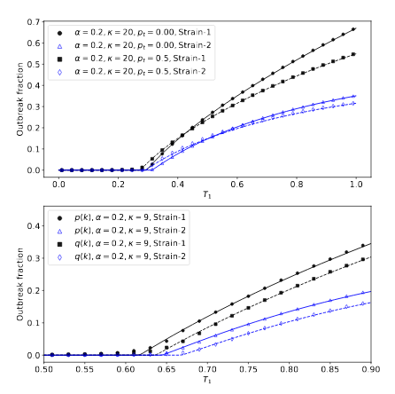

What happens when two diseases spread through a population?
We submitted a new paper to Physical Review E today, about co-infection disease dynamics. Co-infection deals with the situation where two diseases spread through the same contact network, where having had one disease affects a person's susceptibility to the other. We'#re particularly interested in clustered networks, where there are short and long cycles of "acquaintances" that can give a disease more opportunities to spread, and can give rise to quite complicated patterns of infection history.

We managed to show that clustering affects the epidemic threshold for a disease outbreak in surprising ways, increasing the threshold on a clustered human contact network: the opposite to what happens in an ER network. (Creating that plot, incidentally, involved over a week of computation on a 72-core compute cluster since it needed lots of repeated experiments to get the variance down to an acceptable level.)